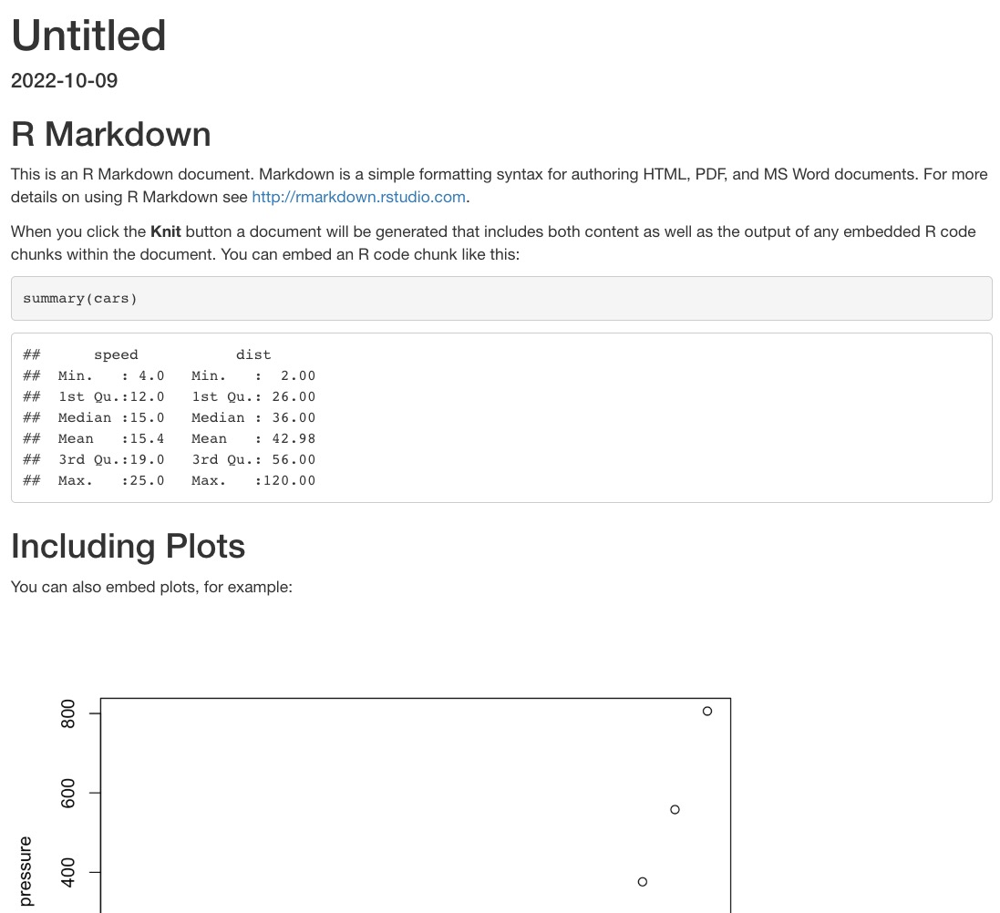
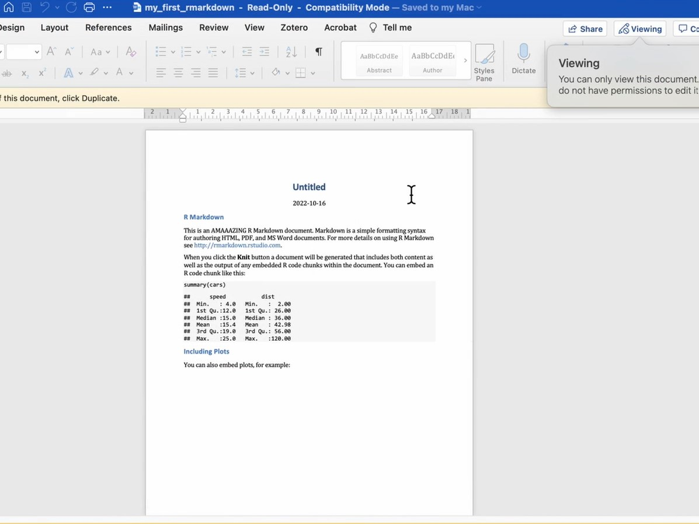
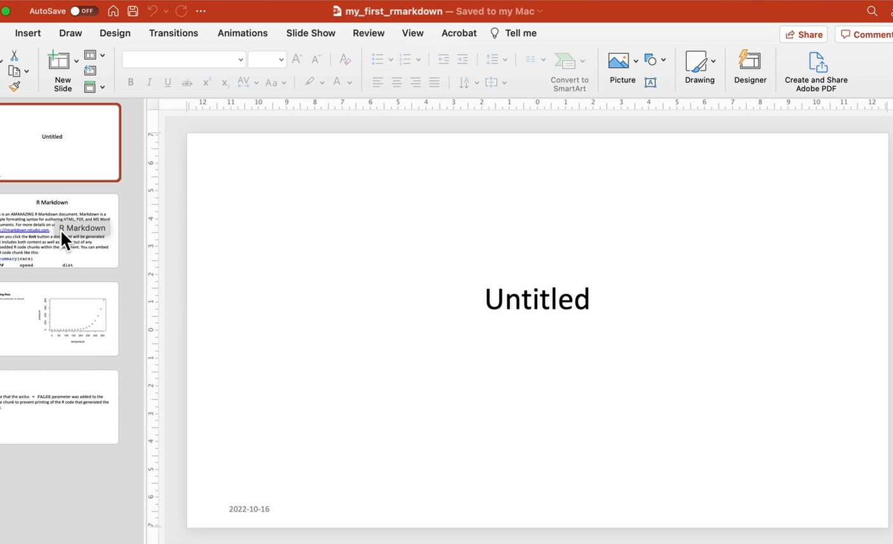
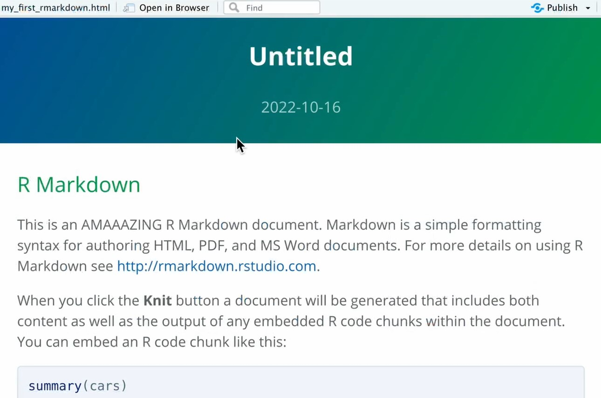
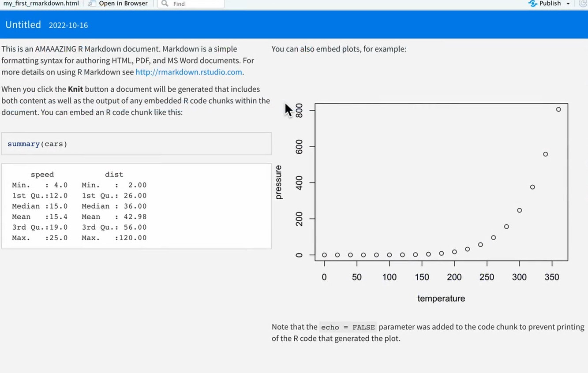
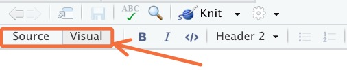

r_code <- 2+26 R Markdown
6.1 Introduction
The {rmarkdown} package enables you to generate dynamic documents by combining formatted text and results produced by R code. With R Markdown, you can create documents in various formats such as HTML, PDF, Word, and many others, making it a versatile tool for exporting, communicating, and sharing your analysis results.
This document itself was created using R Markdown. While there is an entire book dedicated to R Markdown, we will cover some of the essential concepts here.
Note that working with R Markdown requires using a lot of the graphical user interface (GUI) tools in RStudio. Because of this, the written notes in this lesson will not be as detailed as in other lessons. For deeper understanding, we recommend that you follow along with the accompanying video tutorial.
Learning objectives
- Create and knit an R Markdown document that includes code and free text
- Output documents in multiple formats, including HTML, PDF, Word, PowerPoint, and flexdashboards
- Understand basic Markdown syntax
- Use R chunk options, such as eval, echo, and message
- Know the syntax for inline R code
- Recognize useful packages for table formatting in R Markdown
- Understand how to use the {here} package to set the project folder as the working directory in R Markdown files
6.2 Project setup
To begin, open RStudio and click on the File menu. Select New Project… and then click on New Directory. Choose a name for your project and specify the directory where you want to store it. Remember the location for future reference. Once you have filled out these fields, click Create Project.
Next, let’s set up some folders within the project. In the Files pane, click on New Folder and name it “data”. Click OK. This folder will store the project’s data. Create another folder called “rmd” to store your R Markdown documents.
6.3 Create a new document
An R Markdown document is a simple text file with the .Rmd extension.
To create a new R Markdown document in RStudio, go to the File menu, choose New file, and then select R Markdown…. If prompted, install the necessary packages. Once RStudio has the required packages, the following dialog box will appear:

For now, keep the default values and click OK. A file with sample content will be displayed.
Experiment with editing some of the text in the file. Notice that it consists of free text and code sections.
Save your file using Cmd/Ctrl + S, and make sure to give it the “.Rmd” extension. For example, “ebola_analysis.Rmd”. Save it in the “rmd” folder you created earlier.
To render the document, click on the “knit” button at the top right:

This will generate an HTML output that looks like this:

The rendered file will be stored in the same directory as your Rmd file, with the same name but ending in “.html” instead of “.rmd”.
Vocab
HTML stands for Hypertext Markup Language and is the standard format used for most documents on the web.
6.4 R Markdown Header (YAML)
Let’s return to the rest of the Rmd file and examine it part by part.
The first part of the document is its header, also known as “YAML” (Yet Another Markup Language). The name is intended to be humorous.
---
title: "Untitled"
output: html_document
date: "2022-10-09"
---The YAML header must be located at the very beginning of the document, delimited by three dashes (---) before and after.
This header contains the document’s metadata, such as its title, author, date, and various options that allow you to configure and customize the entire document and its rendering. For example, the line output: html_document specifies that the generated document should be in HTML format.
You can change the html_document text to experiment with other formats.
6.4.1 Word Document
If you set the output to “word_document”, and click to tknit the file, the rendered document will look like this:

A “.docx” version of your document will be created in the “rmd” folder.
6.4.2 PowerPoint Document
When the output is set to “powerpoint_document”, the result will be:

6.4.3 PDF Document
If you change the output setting to “pdf_document”, you can obtain the same document in PDF format (you may be prompted to install tinytex on your computer, see below):

Key Point
For PDF generation, you must have a working LaTeX installation on your system. If not, Yihui Xie’s tinytex extension aims to simplify the installation of a minimal LaTeX distribution regardless of your machine’s operating system.
To use it, first install the extension with install.packages('tinytex'), then run the following command in the console (expect a download of about 200MB): tinytex::install_tinytex(). More information is available on the tinytex website.
6.4.4 Prettydoc
To try the “prettydoc” format, type install.packages('prettydoc') into the console and press Enter. The output format for prettydoc is slightly different from the previous three. You need to use prettydoc::html_pretty in the output section. When you knit a prettydoc, you should see something like this:

6.4.5 Flexdashboard
You can even create a simple dashboard format. First, run install.packages('flexdashboard'). Then, set the output to flexdashboard::flex_dashboard and knit. The result will be similar to the following:

Note that it does not yet have tabs. To create tabs in a flexdashboard, change some of your double hashtags ## to single hashtags #. This will modify the header style for those sections, and flexdashboard will render those headers as tabs.
Many other formats are available, and we encourage you to explore them on your own!
6.5 Visual vs Source mode
Rmarkdown documents can be edited in either a “Source” mode or a “Visual” mode.
You can switch into visual mode for a given document using the toolbars. There is a pair of buttons to toggle between the modes:

What’s the difference between these two modes?
In source mode, you see the raw markdown syntax.
Vocab
Markdown is a simple set of conventions for adding formatting to plain text. For example, to italicize text, you wrap it in asterisks *text here*, and to start a new header, you use the pound sign #. We will learn these in detail below.
In visual mode, you see a Microsoft Word-like view with a toolbar for easy formatting.
This means you don’t have to remember the syntax for markdown elements. For example, if you want to make a section of text bold, you can simply highlight that piece of text and click on the bold button in the toolbar.
While visual mode is much easier to use, we will teach you markdown syntax here for three reasons:
Visual mode can sometimes be buggy, and to debug this, you’ll need to switch to source mode.
Understanding markdown syntax is useful outside of Rmarkdown.
Visual mode is not available in RStudio’s collaborative mode, which you may want to use.
6.6 Markdown syntax
In the “Help” tab of the top RStudio menu, if you look up “Markdown Quick Reference”, you will find a wide variety of RMD options available.
You can define titles of different levels by starting a line with one or more #:
## Level 1 title
### Level 2 Title
#### Level 3 TitleThe body of the document consists of text that follows the Markdown syntax. A Markdown file is a text file that contains lightweight markup to help set heading levels or format text. For example, the following text:
This is text with *italics* and **bold**.
You can define bulleted lists:
- first element
- second elementWill generate the following formatted text:
This is text with italics and bold.
You can define bulleted lists:
- first element
- second element
Note that you need spaces before and after lists, as well as keeping the listed items on separate lines. Otherwise, they will all crunch together rather than making a list.
We see that words placed between asterisks are italicized, and lines that begin with a dash are transformed into a bulleted list.
The Markdown syntax allows for other formatting, such as the ability to insert links or images. For example, the following code:
[Example Link](https://example.com)… will give the following link:
We can also embed images. If you’re in Source mode, type:
, replacing “what you want the subtitle to say” (it can also be blank), “images” with the name of the image folder in your project, and “picture_name.jpg” with the name of the image you want to use. In Visual mode, you can open the folder that holds your image on your computer and drag-and-drop the image from the folder onto the page you’re building. Alternatively, place the cursor where you want the image, click the button above marked with a “picture” icon, follow the prompts, and insert your image where the cursor is. This will also create an “images” folder in your project (if it doesn’t already exist) and put the image file into the “images” folder.
When titles have been defined, clicking on the Show document outline icon on the far right of the toolbar associated with the R Markdown file will display a table of contents automatically generated from the titles, allowing for easy navigation within the document:

6.6.1 Customizing the generated document
The generated document can be customized by modifying options in the document’s preamble. RStudio offers a graphical interface to change these options more easily. To access it, click on the gear icon to the right of the Knit button and choose Output Options…

A dialog box will appear, allowing you to select the desired output format and various options depending on the format:

For example, with the HTML format, the General tab allows you to specify if you want a table of contents, its depth, the themes to apply for the document and the syntax highlighting of the R blocks, etc. The Figures tab allows you to change the default dimensions of the generated graphics.
When you change options, RStudio will modify the preamble of your document. For instance, if you choose to show a table of contents and change the syntax highlighting theme, your header will become something like:
---
title: "R Markdown Review"
output:
html_document:
highlight: kate
toc: yes
---You can also modify the options directly by editing the preamble.
Note that it is possible to specify different options depending on the format, for example:
---
title: "R Markdown Review"
output:
html_document:
highlight: kate
toc: yes
pdf_document:
fig_caption: yes
highlight: kate
---The complete list of possible options is available on the official documentation site (which is very comprehensive and well-made) and on the cheat sheet and reference guide, accessible from RStudio via the Help menu, then Cheatsheets.
6.7 R code chunks
In addition to free text in Markdown format, an R Markdown document contains, as its name suggests, R code. This is included in blocks (chunks) written the following way in Source mode:
```{r}
r_code <- 2+2
```
Which will produce the following in Visual mode:
As this sequence of characters is not very easy to enter, you can use the Insert menu of RStudio and choose R[^3], or use the keyboard shortcut Command+Option+i on Mac or Ctrl+Alt+i on Windows.
Note that it is possible to use other languages in code chunks.

In RStudio blocks of R code are usually displayed with a slightly different background color to distinguish them from the rest of the document.
When your cursor is in a block, you can enter the R code you want and execute it with Command + Enter. You can also execute all the code contained in a block by clicking on the green “play” button at the top right of the code chunk.
6.7.1 Chunk output inline vs in condole
In RStudio, by default, the results of a block of code (text, table or graphic) are displayed directly in the document editing window, allowing them to be easily viewed and kept for the duration of the session.
This behavior can be changed by clicking the gear icon on the toolbar and choosing Chunk Output in Console.
6.7.2 R code chunk options
It is also possible to pass options to each block of R code to modify its behavior.
Remember that a block of code looks like this:
```{r}
x <- 1:5The options of a code block are to be placed inside the braces {r}, with a comma separating each option.
6.7.3 Block name
The first possibility is to give a name to the block. This is indicated directly after the r:
{r block_name}
It is not mandatory to name a block, but it can be useful in the event of a compilation error, to identify the block that caused the problem. Be careful, you cannot have two blocks with the same name.
6.7.4 Options
In addition to a name, a block can be passed a series of options in the form option=value. Here is an example of a block with a name and options:
```{r blockName, echo = FALSE, warning = TRUE}
x <- 1:5And an example of an unnamed block with options:
```{r echo = FALSE, warning = FALSE}
x <- 1:5One of the useful options is the echo option. By default echo is TRUE, and the block of R code is inserted into the generated document, like this:
x <- 1:5
print(x)[1] 1 2 3 4 5But if we set the echo=FALSE option, then the R code is no longer inserted into the document, and only the result is visible:
[1] 1 2 3 4 5Here is a list of some of the available options:
| Option | Values | Description |
|---|---|---|
| echo | TRUE/FALSE | Show (or hide) this R code chunk in the resulting knitted document |
| eval | TRUE/FALSE | Run (or not) the code in this code chunk in the resulting knitted document |
| include | TRUE/FALSE | Combines the options “echo and eval”; either show and run, or hide and don’t run |
| message | TRUE/FALSE | Show (or hide) any system messages generated by running this code chunk in the resulting knitted document |
| warning | TRUE/FALSE | Show (or hide) any warnings generated by running this code chunk in the resulting knitted document |
There are many other options described in particular in R Markdown reference guide{target = “_blank”} (PDF in English).
6.7.5 Change options
It is possible to modify the options manually by editing the header of the code block, but you can also use a small graphical interface offered by RStudio. To do this, simply click on the gear icon located to the right of the header line of each block:

You can then modify the most common options, and click on Apply to apply them.
6.7.6 Global Options
You may want to apply an option to all the blocks in a document. For example, one may wish by default not to display the R code of each block in the final document.
You can set an option globally using the knitr::opts_chunk$set() function. For example, inserting knitr::opts_chunk$set(echo = FALSE) into a code block will set the echo = FALSE option to default for all subsequent blocks.
In general, we place all these global modifications in a special block called setup and which is the first block of the document:
```{r, include=FALSE}
knitr::opts_chunk$set(echo = FALSE)6.8 Inline Code
It is also possible to write code chunks embedded in the text. If you go to Source mode and type
“The sum of a pair of 2s is ` r 2+2 `”
and then knit the RMD, the resulting document will evaluate the r code between the backticks. Note that you have to include the “r” at the beginning of your inline code chunk to get it to recognize it as R code.
You could also pass variables around your document just like in a regular R program. For example, on one line you could run,
``` {r} max_height <- max(women$height) ```
“The maximum height in the women data set is ` r max_height ` .”
The advantages of such a system are numerous:
a single document can show your entire analysis workflow, since the code, results and text explanations are included
the document can be very easily regenerated and updated, for example if the source data has been modified.
the variety of output formats (HTML, PDF, Word, slides, dashboards, etc.) makes it easy to present your work to others.
6.9 Display tables
There are a number of ways for R Markdown Documents to show data tables. To start, you can see how our RMD displays a table with no formatting:
women height weight
1 58 115
2 59 117
3 60 120
4 61 123
5 62 126
6 63 129
7 64 132
8 65 135
9 66 139
10 67 142
11 68 146
12 69 150
13 70 154
14 71 159
15 72 164It looks pretty basic. Next, to follow along you’ll want to load the following packages:
pacman::p_load(flextable, gt, reactable)Flextable is better for showing simple tables supported by many formats. GT is better for showing complex tables in HTML documents. Reactable is better for showing very large tables in HTML by giving your audience the option to scroll through the tables.
"This is a flextable"[1] "This is a flextable"flextable::flextable(women)height | weight |
|---|---|
58 | 115 |
59 | 117 |
60 | 120 |
61 | 123 |
62 | 126 |
63 | 129 |
64 | 132 |
65 | 135 |
66 | 139 |
67 | 142 |
68 | 146 |
69 | 150 |
70 | 154 |
71 | 159 |
72 | 164 |
"This is a GT table"[1] "This is a GT table"gt::gt(women)| height | weight |
|---|---|
| 58 | 115 |
| 59 | 117 |
| 60 | 120 |
| 61 | 123 |
| 62 | 126 |
| 63 | 129 |
| 64 | 132 |
| 65 | 135 |
| 66 | 139 |
| 67 | 142 |
| 68 | 146 |
| 69 | 150 |
| 70 | 154 |
| 71 | 159 |
| 72 | 164 |
"This is a reactable"[1] "This is a reactable"reactable::reactable(women)You can see many other types of table formats people have created at https://www.rstudio.com/blog/rstudio-table-contest-2022/
6.10 Document Templates
We have seen here the production of “classic” documents, but R Markdown allows you to create many other things.
The extension’s documentation site offers a gallery of the different possible outputs. You can create slides, websites or even entire books, like this document.
6.10.1 Slides
An interesting use is the creation of slideshows for presentations in the form of slides. The principle remains the same: we mix text in Markdown format and R code, and R Markdown transforms everything into presentations in HTML or PDF format. In general, the different slides are separated at certain heading levels.
Some slide templates are included with R Markdown, including:
ioslidesandSlidyfor HTML presentationsbeamerfor PDF presentations viaLaTeX
When you create a new document in RStudio, these templates are accessible via the Presentation entry:

Other extensions, which must be installed separately, also allow slideshows in various formats. These include in particular:
- xaringan for HTML presentations based on remark.js
- revealjs for HTML presentations based on reveal.js
- rmdshower for HTML slideshows based on shower
Once the extension is installed, it generally offers a starting template when creating a new document in RStudio. These are accessible from the From Template entry.

6.10.2 Templates
There are also different templates allowing you to change the format and presentation of the generated documents. A list of these formats and their associated documentation can be accessed from the formats documentation page.
Note in particular:
- the Distill format, suitable for scientific or technical publications on the Web
- the Tufte Handouts format which allows you to produce PDF or HTML documents in a format similar to that used by Edward Tufte for some of his publications
- rticles, package that offers LaTeX templates for several scientific journals
Finally, the rmdformats extension offers several HTML templates particularly suitable for long documents.
Again, most of the time, these document templates offer a starting template when creating a new document in RStudio (entry From Template):
6.11 Resources
Below are some resources to help you learn more about R Markdown:
The book R for data science, available online, contains a chapter dedicated to R Markdown.
The extension’s official site contains very complete documentation, both for beginners and for advanced users.
Finally, the RStudio help (Help menu then Cheatsheets) provides access to two summary documents: a synthetic “cheat sheet” (R Markdown Cheat Sheet) and a more complete “reference guide” ( R Markdown Reference Guide).